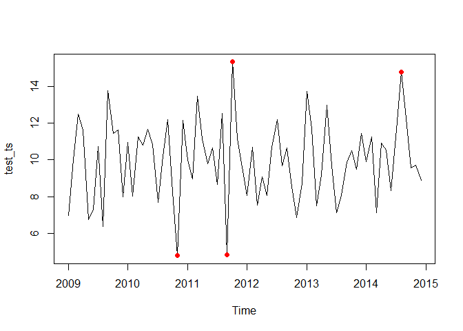

The {spectralAnomaly} package is a simple set of tools for R users to detect anomalies in data, such as a time series, using the ‘Spectral Residual’ method.
Installation
The {spectralAnomaly} can be installed directly from CRAN:
install.packages('spectralAnomaly')You can also install the latest development version of {spectralAnomaly} like so:
remotes::install_github('al-obrien/spectralAnomaly')Examples
Create a noisy time series with a modest anomaly threshold
test_ts <- ts(rnorm(12*6,10,2), start=c(2009, 1), end=c(2014, 12), frequency=12)
ts_scores <- anomaly_score(test_ts, score_window = 25)
plot(test_ts, type = 'l')
points(test_ts, col = ifelse(ts_scores > quantile(ts_scores, prob = 0.95),'red',NA), pch = 16)